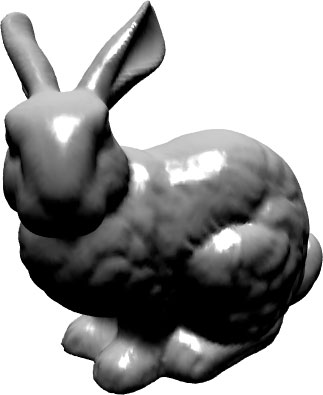

The purpose of Project 3 is to practice basic geometry processing and shaded rendering.
Add the four WebGL utility libraries and copy your HTML and JavaScript sources from Project 2, renaming them for Project 3.
webgl-utils.jswebgl-debug.jscuon-utils.jscuon-matrix.jsprog3.jsprog3.htmlThis application must take a table of vertices and a table of triangles in JSON format, calculate a smoothed normal for each vertex, render the resulting data using basic lighting, and allow the user to tumble the shaded model using the mouse.
The tables of vertices and triangles are given here:
The output should look something like the image at the right.
Do be advised: the bunny model is imperfect. As a triangulation of a scanned point cloud, it has holes (particularly in the bottom) and degenerate triangles. These flaws become especially apparent in the reduced copies. However, the head and body should look correct.
Format carefully and eliminate any dead code. Upload all of your project files to your prog3 directory on classes.csc.lsu.edu and p_copy them before the deadline. This procedure is documented here.